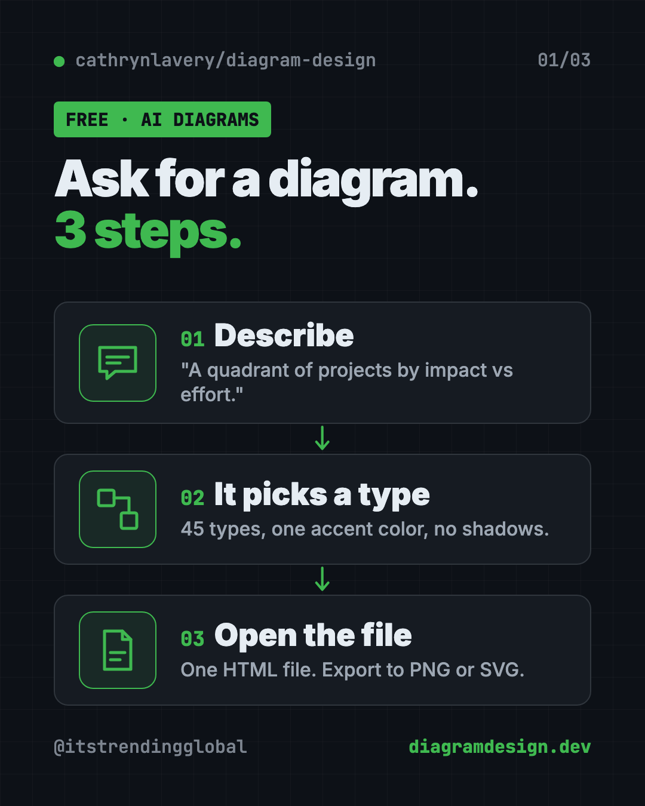
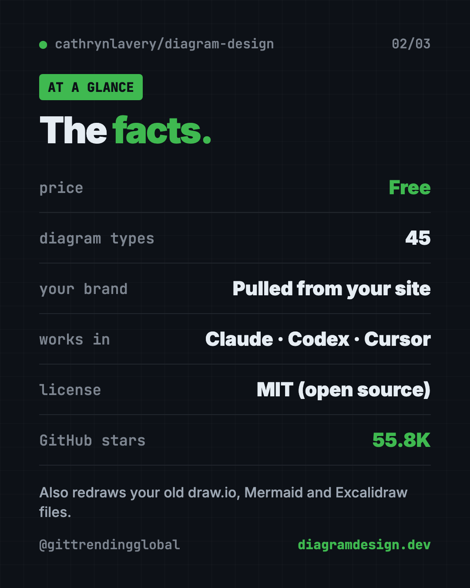
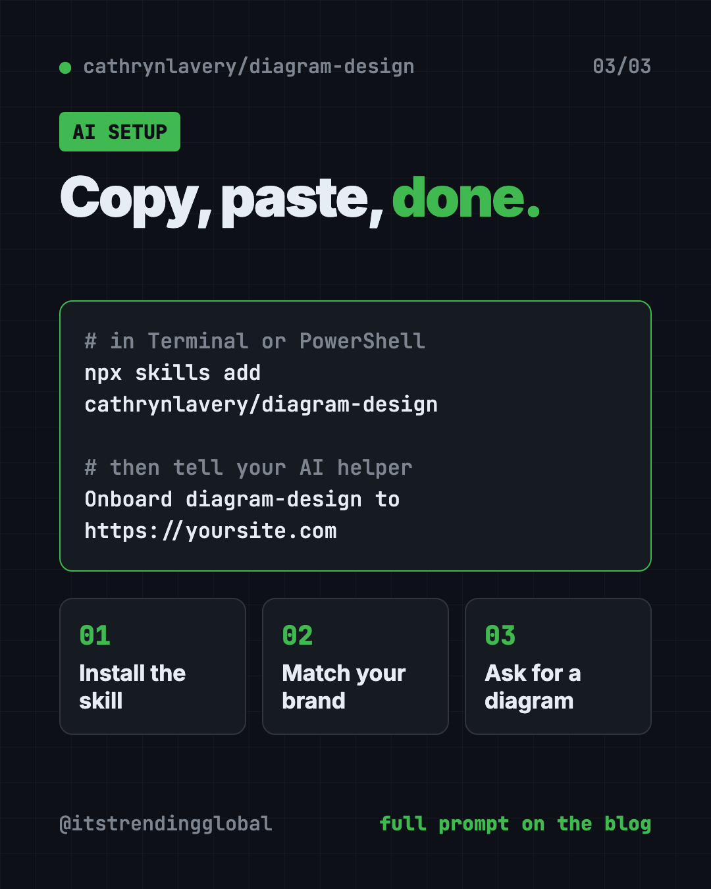
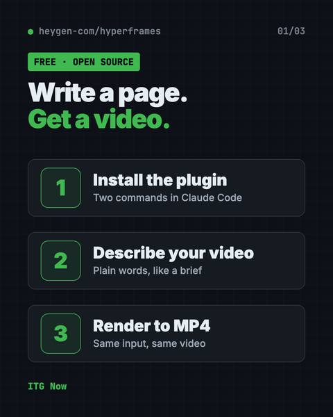

On-Brand Diagrams with Claude: Diagram Design Guide (2026)
- Published 15 Oct 2026
- Updated 17 Oct 2026
- 8 min read
- License MIT
- By the ITG Now team
Diagram Design is a free skill for making on-brand diagrams with Claude and other AI helpers. It teaches your AI good taste. You ask in plain words, like "make a quadrant of our projects by impact vs effort," and you get one clean diagram file in your own brand colors.
Ask a regular AI for a diagram and you often get rounded boxes, too many colors and arrows crossing everywhere. This guide shows how Diagram Design fixes that, what it can draw, and how to install it in one line. You'll also get prompts so an AI helper can do the setup.
Key takeaways
- Free and open source. MIT license.
- 45 diagram types. Flowcharts, architecture maps, quadrants, timelines, exploded product views and more.
- Matches your brand. Point it at your website and it pulls your colors and fonts.
- One simple file. Each diagram is a single HTML page. Double-click to open. Export to PNG or SVG.
- Works in many AI helpers. Claude Code, Codex, Cursor, GitHub Copilot, Gemini CLI and others.
What is Diagram Design?
Diagram Design is a "skill" for AI helpers. A skill is a set of written instructions your AI follows for one kind of task. This one is all about diagrams.
Its maker, Cathryn Lavery, wanted diagrams for her blog that matched the rest of her site. Every time she asked an AI, she got "a generic rounded-box thing." So she wrote the taste down.
The rules are simple. One accent color for the one or two things that matter. Thin lines. No shadows. Everything lined up on a neat grid. The README puts it this way: "The highest-quality move is usually deletion."
On GitHub it has about 55.8K stars. Stars are like bookmarks, so a lot of people want better diagrams.

How to use Diagram Design (real examples)
You talk to your AI helper in plain words. Here are prompts from the README, plus everyday versions.
- Plan your quarter. "I need a quadrant showing Q2 projects by impact vs effort." Great for a team meeting slide.
- Explain how your app works. "Make me an architecture diagram of my app: frontend, backend, database, Redis cache."
- Show a product's parts. The exploded view draws an object with its parts lifted apart. The README shows a phone teardown and a mechanical keyboard.
- Map an office or campus. The floor-plan style draws one floor or one site from above at an angle. Examples include an office, a coffee shop and a campus.
- Clean up an old diagram. Point it at a draw.io, Mermaid or Excalidraw file and say "redraw this for my deck." It keeps the content and gives it the clean look.
💡 Tip: Tell it where the diagram is going: a slide, a blog post or a social card. Size and text adjust to fit.
How does it match my brand?
This is the clever part. Say this to your AI helper:
Onboard diagram-design to https://yoursite.com
It visits your homepage and pulls your main colors and fonts. It shows you the proposed changes. Once you say yes, every new diagram uses your look.
It also checks that text is easy to read against the background. If a color is too faint, it suggests a better one and explains why.
Work for several clients? You can save each brand as a named profile and switch between them.
Is Diagram Design free?
Yes. It is free and open source under the MIT license. You can use it for personal or business work.
Your AI helper may cost money on its own. That's separate.
⚠️ Heads up: The README says official builds come only from its GitHub repo. A listing under any name other than LittleMight, the maker's company, is an unofficial copy.
Diagram Design at a glance
| Price | Free |
| Works offline | Mostly. Ask for system fonts and the file makes no network requests |
| Platforms | Any AI helper that reads Agent Skills: Claude Code, Codex, Cursor, Copilot, Gemini CLI and more |
| License | MIT (open source) |
| Diagram types | 45, each in light, dark and editorial styles |
| Output | One HTML file; export to PNG or SVG |
| Best for | Bloggers, marketers, teachers and teams who want clean, branded diagrams |

How to install Diagram Design
You need an AI helper that supports skills, and Node.js, a free program many tools run on.
Open Terminal (Mac or Linux) or PowerShell (Windows). Copy and paste this:
npx skills add cathrynlavery/diagram-design
It asks which AI helpers to install into. Pick the ones you use.
In Claude Code
For updates and extra commands, use the plugin store instead. Copy and paste these two lines into Claude Code:
/plugin marketplace add cathrynlavery/diagram-design
/plugin install diagram-design@diagram-design
The README suggests one more step. Run /plugin, open Marketplaces, pick diagram-design and choose "Enable auto-update."
In Codex
Copy and paste this into your terminal:
codex plugin marketplace add cathrynlavery/diagram-design
codex plugin add diagram-design@diagram-design
Then just ask for a diagram in plain words.
Export a PNG or SVG
In Claude Code, copy and paste this, with your file name:
/diagram-design:export-diagram path/to/diagram.html
Or simply ask, "Export this diagram as SVG and PNG." The README says PNG export needs a one-time setup: pip install playwright && playwright install chromium.
Let Claude or Codex set it up for you
Claude Code and OpenAI Codex are AI helpers that can run setup steps on your computer. You paste a request, it does the work, and you approve each step. Here, the same helper then draws your diagrams.
Copy and paste this:
Please help me install Diagram Design from github.com/cathrynlavery/diagram-design.
1. Check which AI helper I'm using and whether Node.js is installed.
2. Install it the way the README recommends for my helper.
3. Explain each step before you run it.
4. Then onboard diagram-design to [my website address] so diagrams match my brand.
5. Make one test diagram: a simple 3-step flow of how a customer buys from us.
Then try asking:
Make a quadrant of these projects by impact vs effort: [paste your list]. Size it for a 16:9 slide.
Redraw this Mermaid diagram in the editorial style, simplified for executives: [paste or attach file]
Export my last diagram as a PNG at 3x for my blog.

What are Diagram Design's limits?
The README is refreshingly honest here.
- Quality depends on your AI model. The same prompt can come out a bit different twice.
- Not an editable source file. You can't drag a box like in draw.io. You ask again, or edit the image code.
- Not for docs that change every week. For diagrams that live in code and change constantly, the README says Mermaid is still the better fit.
- Built for publishing. In the README's words, it is "for the diagram you are going to publish."
💡 Tip: Want a quick look first? The project has a live gallery of every diagram type at cathrynlavery.github.io/diagram-design.
Our take
Diagram Design does one thing and does it with care. If you've ever skipped a diagram because the AI version looked cheap, this fixes it.
What we like:
- A clear, calm look with one accent color.
- Matches your brand from your website.
- 45 types, from flowcharts to exploded product views.
- Redraws old draw.io, Mermaid and Excalidraw files.
- Honest README that says when to use something else.
What to watch for:
- Results vary with the AI model you use.
- No drag-and-drop editing.
- Setup differs a little for each AI helper.
Want interactive diagrams you can click through? See Archify. Want AI-made web pages that don't look AI-made? Read about Hallmark and Awesome DESIGN.md. Diagram Design also made our August 2026 Top 5.
FAQ
Can Diagram Design make on-brand diagrams with Claude?
Yes, and it's free. Diagram Design is free and open source under the MIT license. You use it through an AI helper like Claude Code or Codex, which may have its own costs.
What kinds of diagrams can it make?
It has 45 types, including flowcharts, architecture maps, quadrants, sequences, timelines, exploded product views and floor plans. Each comes in light, dark and editorial styles.
Can Diagram Design use my brand colors?
Yes. Say "onboard diagram-design to" plus your website address. It pulls your colors and fonts, shows you the changes, and applies them after you agree.
Can I turn my old Mermaid or draw.io diagrams into this style?
Yes. It can redraw draw.io, Mermaid and Excalidraw files. It keeps the content and relationships, and lists anything it merged or dropped.
How do I get a PNG of my diagram?
Ask your AI helper to export it, or use the export command in Claude Code. PNG export needs a one-time Playwright setup.
Which AI helpers does it work with?
The README lists Cursor, Claude Code, Codex, GitHub Copilot, Gemini CLI, Cline, Windsurf and Amp, plus others that read Agent Skills.
Get Diagram Design: github.com/cathrynlavery/diagram-design
More free design tools
- PhotoCraft PhotoCraft is a free PSD editor that works like Photoshop. It opens and saves real layered PSD files and runs offline on Mac, Windows and Linux.
- OpenPencil OpenPencil is a free Figma alternative. It opens and saves .fig files, builds designs from a chat prompt, and lets you co-edit live with no account.
- Compositor Compositor is a free Photoshop alternative for Mac with layers, masks, blend modes and Photoshop-style shortcuts. It opens PSD files and has no subscription.
- Archify Archify is a free AI diagram generator. Describe an idea, plan or codebase to Claude Code or Codex and get an interactive diagram as one shareable web page.
- Hallmark Hallmark is a free AI web design skill for Claude Code, Cursor and Codex. It steers your AI away from generic pages so each site looks like its own brand.
- OpenDesign OpenDesign is a free open source AI design tool. It uses Claude Code, Codex or Cursor to make on-brand prototypes, slide decks, dashboards and images.
Latest AI news
- Meta gives away its big Muse Spark AI for free
- Google launches TorchTPU to rival Nvidia
- ChatGPT adds PIN-locked chats
- NVIDIA releases Cosmos3-H-Dreams surgery simulator
Keep reading

VoiceStudio: Free ElevenLabs Alternative
VoiceStudio is a free ElevenLabs alternative. Clone a voice, dub videos and turn text into speech on your own Mac, Windows or Linux computer.

HyperFrames: Make AI Videos From HTML
HyperFrames is a free tool that makes AI video from HTML. Your AI agent writes a web page, and HyperFrames renders it into an MP4 video.

Folia: Free Animated Lyrics Music Player
Folia is a free animated lyrics music player that shows full-screen moving lyrics for your local music, Navidrome and more. What it does and how to start.